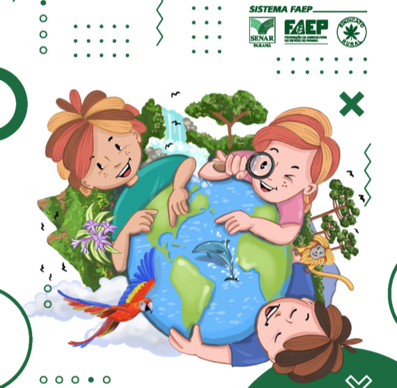

Agrinho: Do Campo à Cidade, Colhendo Oportunidades
Bem-vindo ao nosso site! Aqui você encontrará informações valiosas sobre o campo e a cidade. Explore os recursos e descubra como podemos crescer juntos.
Heróis do Meio Ambiente: Projeto Escolar Transforma Alunos em Guardiões da Sustentabilidade
Essa matéria irá abordar um projeto incrível realizado na Escola Municipal Miguel de Souza, Mandaguaçu-PR
Concurso Agrinho de Redação: Incentivando Jovens a Colherem Ideias e Oportunidades
Conheça um pouco sobre o Concurso Agrinho, mais em específico, a categoria de Redações